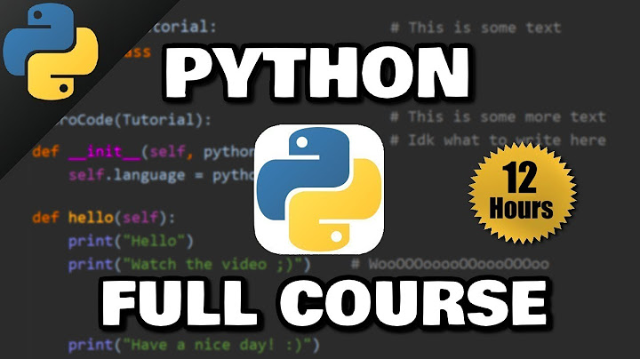
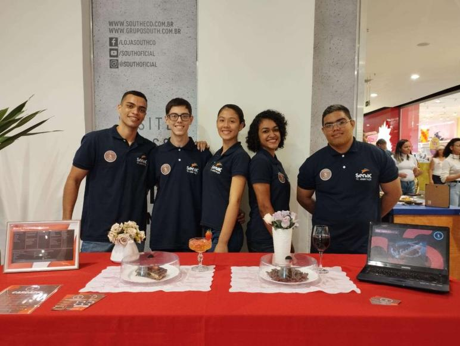

Realização de cursos onlines na área de Python, dois voltados a Python básico e um a Machine Learning.

Curso grátis disponibilizado por "Bro Code" no youtube.
Ações públicas feitas ao estudar como Técnico de Administração no Senac Rio.

Trabalho realizado no Top Shopping - Nova Iguaçu.